Overview
The commissioning phase of a Battery Energy Storage System (BESS) is far more than a final checkbox — it is a project-defining discipline that determines whether a system will perform reliably, safely, and profitably over its operational life. Yet, across the industry, teams routinely underestimate its complexity, treating it as a late-stage formality rather than an engineering-intensive process that begins at project initiation.
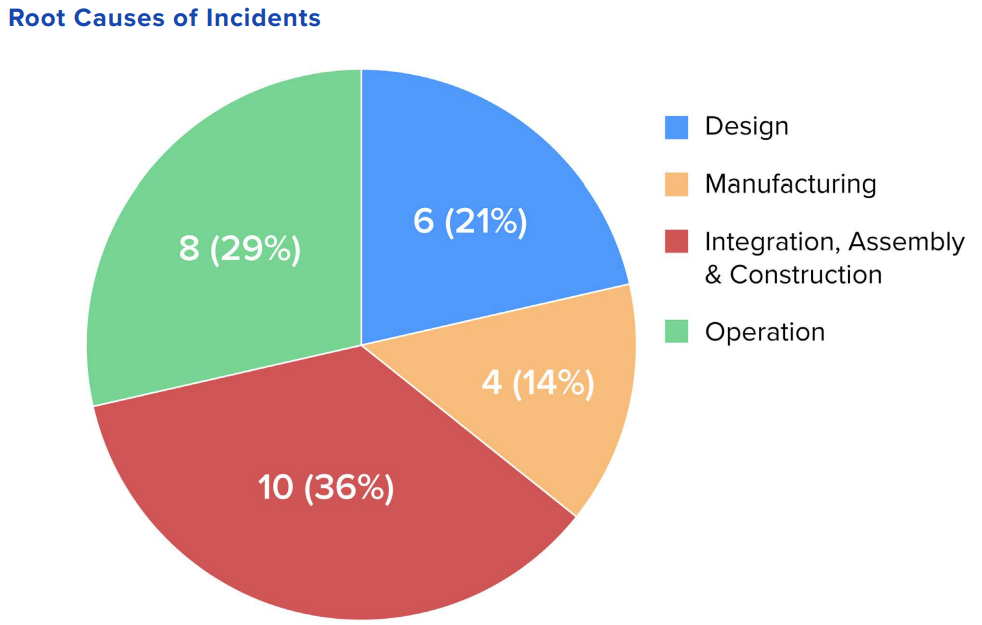
The data is sobering. According to analysis from the EPRI BESS Failure Incident Database, integration, assembly, and construction issues account for 36% of all BESS failures — more than any other single root cause. Even more striking is the timing: 72% of failures occur during construction, commissioning, or within the first two years of operation. This is not random bad luck — it is a preventable pattern rooted in technical oversights, organisational gaps, and procedural shortcuts.
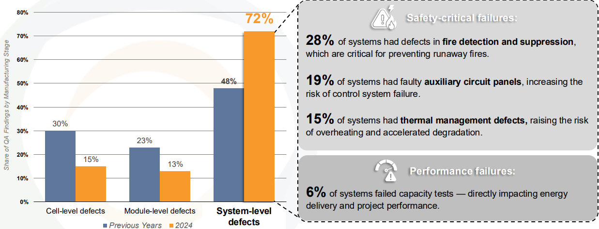
Globally, around 37% of BESS projects miss their timeline targets, with common delays ranging from one to eight months. Understanding where and why these failures originate is the first step toward building BESS assets that deliver full value from day one.
Challenge 1: Battery Management System (BMS) Failures
The Battery Management System is the brain of any BESS installation — responsible for monitoring cell voltage, current, temperature, and State of Charge (SOC) across potentially thousands of individual cells. A malfunctioning BMS is not merely an inconvenience; it is a direct threat to system safety, performance, and commercial viability.
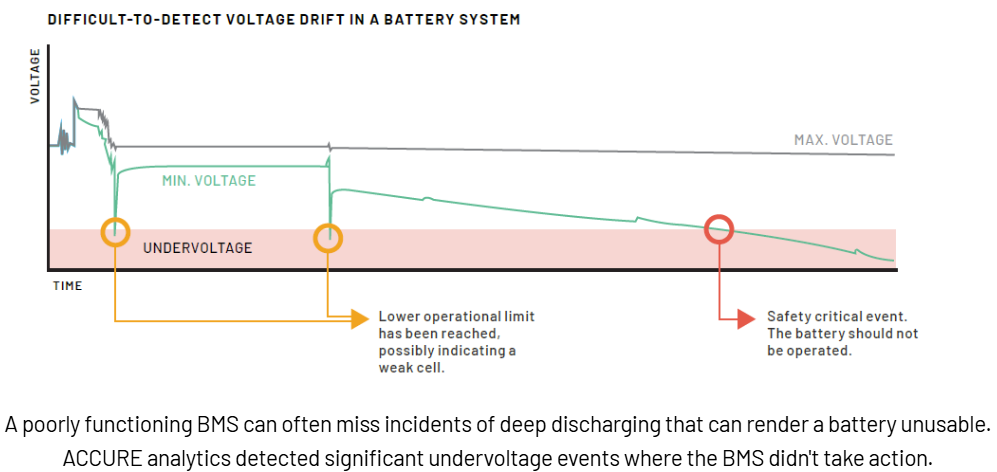
What Goes Wrong
BMS failures during commissioning typically manifest as sensor errors, corrupted firmware logic, or miscalibrated current measurement — all of which produce incorrect SOC and State of Health (SOH) readings. An unreliable BMS can trigger unexpected shutdowns, allow overcharging or deep discharging, and cause growing system imbalances that compound over time.
One of the most commercially damaging BMS failures is erroneous SOC calculation. When the BMS underreports available charge, operators apply conservative safety margins, running the battery well below its true capacity — directly eroding revenue potential. Deep discharging events during setup are particularly dangerous: they can cause copper dissolution from the anode tab, creating conditions for internal short circuits that may appear weeks or months after commissioning is complete.
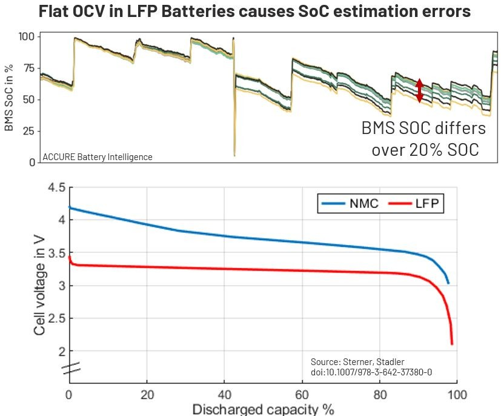
The LFP Problem
The widespread adoption of Lithium Iron Phosphate (LFP) chemistry has made BMS calibration significantly harder. LFP batteries have a notoriously flat Open Circuit Voltage (OCV) curve in the mid-SOC range, which means voltage-based SOC recalibration — the standard backup method when Coulomb counting drifts — becomes unreliable. SOC estimation errors of 20% or more are not unusual in LFP BESS, and this directly suppresses profitability as system operators and energy traders apply buffer margins to account for the uncertainty.
How to Address It
- Conduct thorough BMS validation during Factory Acceptance Testing (FAT), before modules ship to site
- Use cloud-based battery analytics during commissioning to cross-validate BMS readings against independent algorithms
- Allow for full charge/discharge cycles during commissioning to enable BMS self-calibration at SoC extremes
- Ensure current sensors are properly calibrated, as sensor drift is a primary driver of Coulomb counting errors
Challenge 2: Battery Cell Quality and Cell Imbalance
No BMS — however sophisticated — can fully compensate for poor-quality cells. Battery manufacturers face intense pressure to scale production rapidly to meet surging demand, and this creates a well-documented quality risk: higher production volumes correlate with higher rates of out-of-spec cells reaching the field.
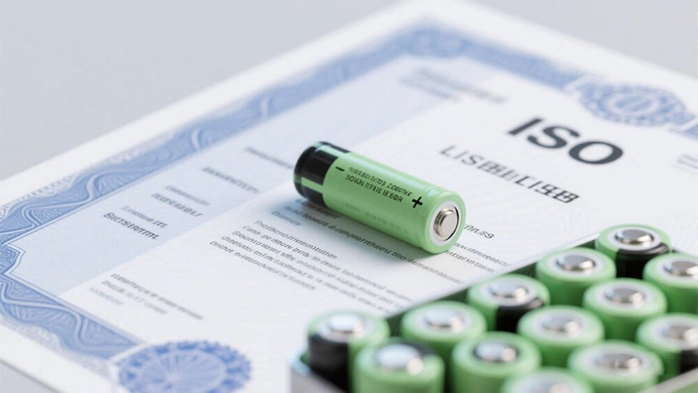
The Scale Problem
A single underperforming cell in a battery string can disrupt the entire module. Cell imbalances — where individual cells exhibit variations in capacity, voltage, or internal resistance — cascade through the system, causing some cells to hit their limits earlier than others and forcing the entire rack to stop charging or discharging prematurely. The result is a reduction in effective capacity utilisation that directly impacts ROI.
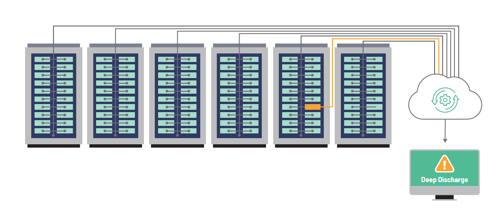
Imbalances also accelerate degradation. Cells that cycle more deeply or at higher temperatures than their neighbours age faster, shortening the operational life of the battery pack and increasing maintenance costs over the asset's life. At the extreme end, cell imbalance can trigger thermal runaway — an uncontrolled exothermic reaction that can escalate to fire.
Cell Balancing Failures
Even when cells start with consistent quality, the balancing process itself can go wrong during commissioning. Passive balancing (dissipating excess energy as heat) and active balancing (redistributing charge between cells) must be carefully configured for the specific cell chemistry and pack topology in use. Misconfigured balancing thresholds, incorrect CV hold strategies, or unsynchronised charge/discharge cycles between racks can create SOC divergence of 30 percentage points or more — conditions that the BMS may misinterpret, triggering counterproductive balancing actions that make the imbalance worse rather than better.
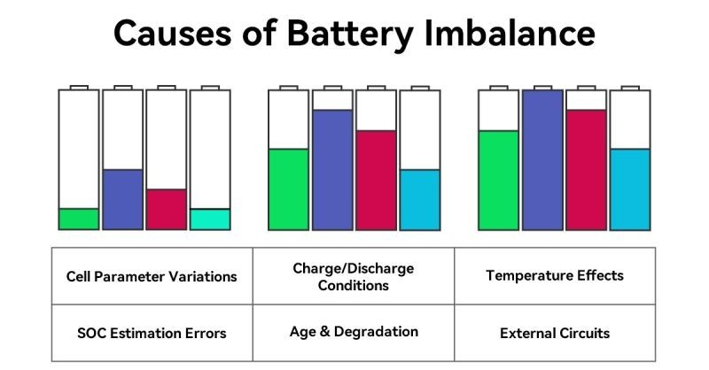
How to Address It
- Insist on comprehensive cell-level data from the manufacturer, including capacity, resistance, and self-discharge test results
- Monitor cell voltage spread in real time during commissioning to detect early imbalance
- Validate balancing thresholds and CV hold strategies for the specific battery chemistry before energising the full system
- Use analytics tools to distinguish true cell-level imbalance from BMS miscalibration
Challenge 3: Grid Integration and Interconnection Failures
Connecting a BESS to the grid is one of the most technically demanding and commercially sensitive phases of commissioning. Unlike solar or wind assets — which simply inject power in one direction — a BESS must both import and export power, respond dynamically to grid signals, and satisfy a complex web of interconnection standards that vary by grid operator and region.
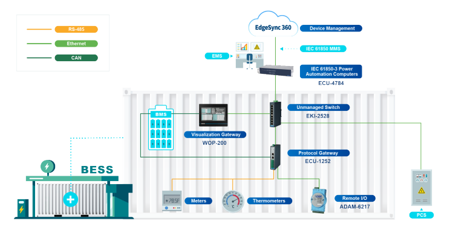
Communication Protocol Mismatches
At the utility scale, BESS batteries and inverters are rarely supplied by the same vendor. Each manufacturer designs its equipment around different assumptions, communication protocols, and control logic. Getting a battery management system, a Power Conversion System (PCS), and an Energy Management System (EMS) to interoperate seamlessly is rarely straightforward — a 30-minute verification on paper can stretch into days of field troubleshooting as teams work through protocol mismatches, firmware conflicts, and timing inconsistencies.
Firmware updates are a particularly treacherous source of delays. An update pushed to a battery controller or inverter shortly before or during commissioning can overwrite existing configurations, break communication links, and introduce new logic conflicts that invalidate prior testing.
Regulatory Compliance (India Context)
In India, BESS projects must comply with the Central Electricity Authority (CEA) Technical Standards for Connectivity to the Grid and the Indian Electricity Grid Code (IEGC). Under the updated CEA framework (enforced from March 2023), all BESS projects must conduct detailed grid simulation studies at the Point of Interconnection (POI), including:
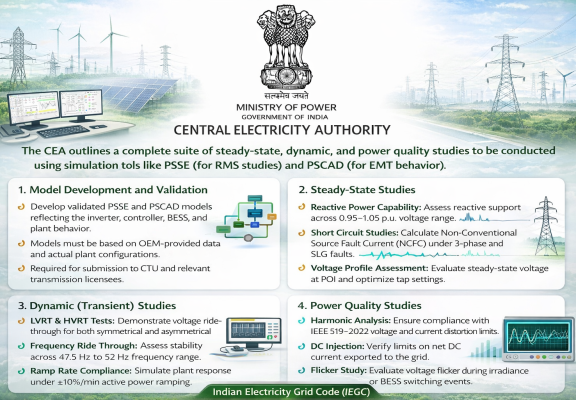
- Steady-state studies: Reactive power capability across 0.95–1.05 p.u. voltage range, short circuit analysis, and voltage profile assessment
- Dynamic/Transient studies: Low Voltage Ride Through (LVRT), High Voltage Ride Through (HVRT), frequency ride-through testing (47.5 Hz – 52 Hz range), and ramp rate compliance
- Power quality studies: Harmonic distortion, flicker, and voltage imbalance assessments using PSSE and PSCAD simulation tools
Failure to demonstrate compliance during commissioning can result in denial of grid access — a commercially catastrophic outcome at the tail end of a multi-crore project.
PCS Tuning and Control Loop Instability
Power Conversion System (PCS) tuning is another hidden trap. Poorly tuned control loops between the BMS and PCS can produce power oscillations, reactive power disturbances, and harmonic injection into the grid. These instabilities are particularly pronounced in weak grid conditions or at sites with high renewable penetration — a scenario increasingly common in India's evolving grid.
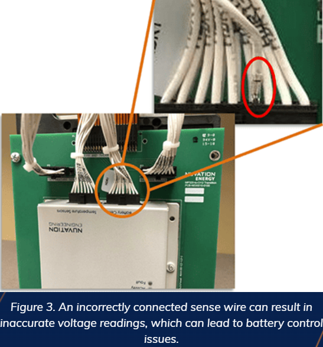
How to Address It
- Conduct lab integration testing (often called system-level FAT or string testing) before field deployment to validate BMS-PCS-EMS communication
- Engage grid code compliance specialists early to complete all required simulation studies (PSSE/PSCAD) well before the interconnection window
- Freeze firmware versions across all components before commissioning begins, and establish a formal change management process for any updates
- Bring in team members with direct OEM-side knowledge to reduce the learning curve during multi-vendor integration
Challenge 4: Thermal Management and HVAC System Failures
Battery cells are highly sensitive to temperature. Operating lithium-ion cells — especially LFP — outside their optimal temperature range (typically 15–35°C) accelerates degradation, reduces round-trip efficiency, and in worst-case scenarios, initiates thermal runaway. Yet thermal management systems are among the most commonly under-tested subsystems during BESS commissioning.
Cooling System Deficiencies
A deficient cooling system — whether air-cooled HVAC or liquid-cooled — causes batteries to age prematurely by sustaining elevated operating temperatures over thousands of cycles. Non-uniform temperature distribution across a battery rack is equally damaging: cells running hotter than their neighbours cycle harder, age faster, and degrade the overall pack performance even when individual cells are within specification.
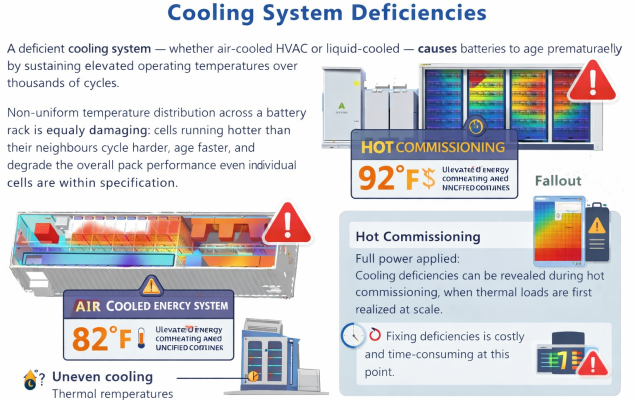
Cooling system issues are frequently discovered during hot commissioning, when full power is applied and thermal loads are first realised at scale. At this point, rectifying design deficiencies is expensive and time-consuming.
Water Ingress and Humidity Failures
Water ingress is a deceptively common cause of early-life BESS failures. Poorly sealed enclosures, condensation from inadequate humidity control, and rain penetration can cause short circuits, corrosion on sensitive electronics, and — in the most severe cases — fires. The DNV BESS incident database includes well-documented cases where condensation on electrical components triggered arcing events that escalated into thermal runaway.
The Victorian Big Battery fire in Australia in July 2021 — one of the most widely studied BESS incidents — was directly linked to a cooling system leak during commissioning. A liquid coolant leak caused arcing between battery modules, triggering thermal runaway that ultimately destroyed two Tesla Megapacks.
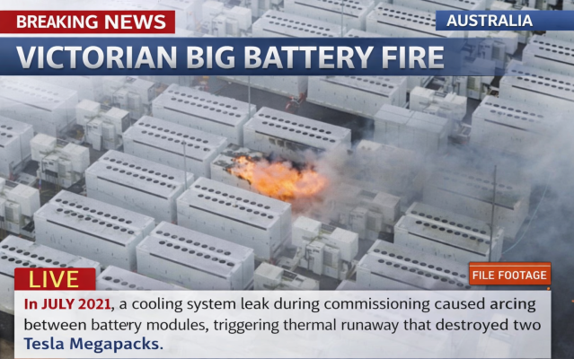
Pre-Delivery Storage Conditions
Thermal management issues can originate before a unit ever arrives on site. Batteries stored in overheated warehouses or exposed to temperature excursions during shipping can arrive at the project site already partially degraded — a condition that may not become apparent until capacity testing during commissioning reveals a shortfall against nameplate ratings.
How to Address It
- Test HVAC and liquid cooling systems independently before battery modules are energised; verify temperature uniformity across the full rack.
- Implement continuous temperature monitoring at the cell and module level throughout commissioning, not just during capacity tests.
- Verify enclosure sealing integrity — inspect for potential condensation points and validate humidity control logic under real ambient conditions.
- Request full temperature logs for battery shipments and flag any excursions for warranty documentation before acceptance.
Challenge 5: Organisational, Procedural, and Documentation Failures
The most underappreciated category of commissioning failure is also, statistically, the most impactful. According to Camelot Energy Group's Lynn Appollis-Laurent — a commissioning expert with experience across 55+ BESS projects — most commissioning failures stem from organisational, contractual, and procedural lapses rather than technical issues. Engineers who have successfully commissioned solar and wind plants often underestimate the complexity of BESS, assuming the same project management approaches will transfer — they do not.
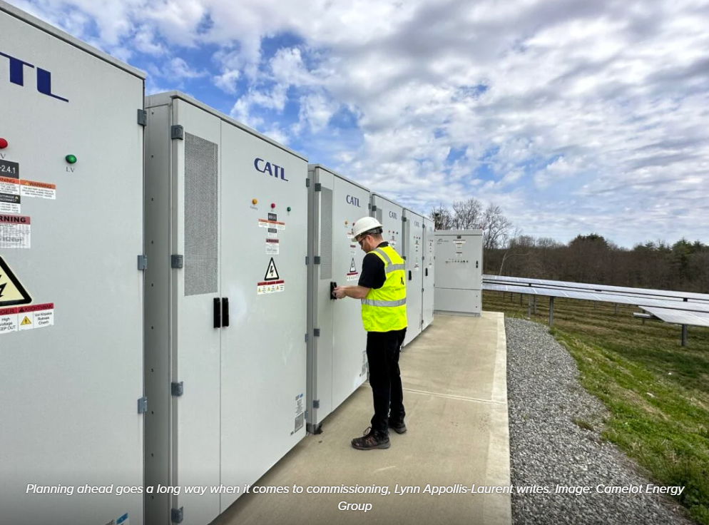
Fragmented Accountability
BESS commissioning involves a complex web of stakeholders: EPCs, battery OEMs, PCS vendors, system integrators, utility interconnection teams, and owner/operator representatives. Without a single, fully integrated RACI (Responsible, Accountable, Consulted, Informed) matrix covering all phases and all parties, scope gaps are inevitable. When these gaps surface during commissioning — as they always do — the result is finger-pointing, rework, and schedule delays that trigger liquidated damage clauses.
Shortcuts and Compliance Theatre
Financial pressures create powerful incentives to rush commissioning. Contractual milestones tied to large payments, investor reporting requirements, and COD (Commercial Operation Date) targets all push teams toward "minimum viable compliance" — accepting incomplete test reports, skipping calibration certificate verification, omitting photographic documentation, and treating critical punch-list items as post-commissioning cleanup. The result is a system that looks commissioned on paper but carries hidden technical debt that manifests as underperformance, unplanned outages, or safety incidents within the first year of operation.
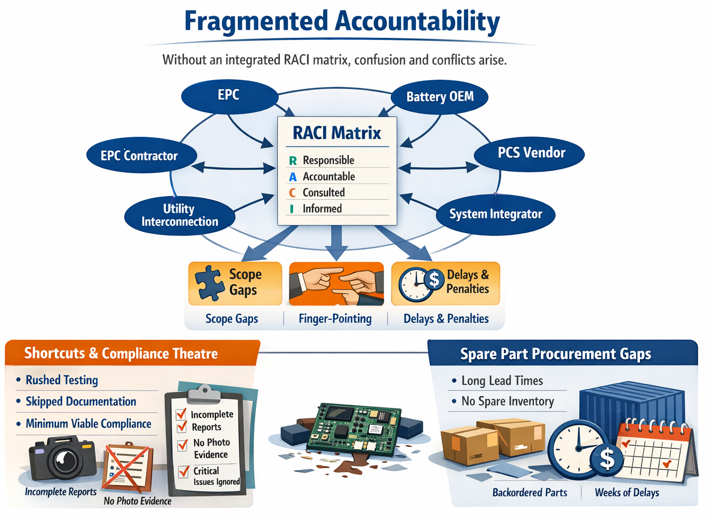
Spare Part Procurement Gaps
BESS components — particularly specialised battery modules, communication hardware, and inverter spare boards — are often not available from local or regional distributors. When a component fails during commissioning, replacement lead times can stretch to weeks, turning a minor fault into a major schedule delay. Projects that fail to pre-stage a comprehensive spare parts inventory before commissioning begins are highly exposed to this risk.
How to Address It
- Treat commissioning as a discipline that begins at project initiation, not a phase that begins when construction ends.
- Build a single, integrated RACI matrix covering all stakeholders and all commissioning phases before mobilisation.
- Engage a third-party commissioning engineer with BESS-specific experience (not solar/wind experience alone) to provide independent oversight.
- Pre-stage a comprehensive spare parts inventory on site, with particular attention to long-lead-time items.
- Establish daily commissioning check-ins with all key stakeholders to break down silos and surface issues in real time.
The Cost of Getting It Wrong
Each of the five challenges above carries direct commercial consequences. Capacity shortfalls identified at acceptance testing can trigger warranty disputes and delay COD. BMS calibration errors reduce the dispatchable capacity, lowering energy arbitrage and ancillary service revenue. Grid code non-compliance can block interconnection entirely. Fire incidents resulting from thermal management or cell failures can destroy assets worth hundreds of crores and create lasting reputational damage.
The most effective antidote to commissioning failure is preparation — and not just technical preparation, but organisational and procedural preparation as well. A project team that has clearly defined ownership at every stage, conducted rigorous FAT before shipping, validated grid compliance well in advance of the interconnection window, and staged adequate spare parts on site will consistently outperform one that treats commissioning as a series of boxes to check at the end.
Quick Reference: Commissioning Risk Checklist
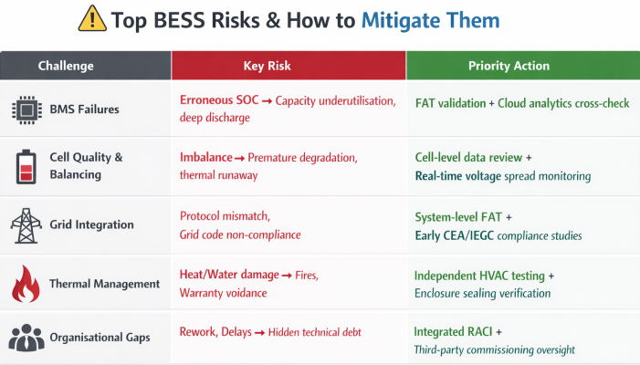
Commissioning is where the value of every design decision, procurement choice, and construction practice is tested at once. Projects that invest in commissioning discipline — technical and organisational — build assets that perform to nameplate, earn full revenue, and sustain warranty coverage. Those that treat it as a formality pay a far steeper price in the years that follow.
Integrated Synthesis and Future Outlook
The complexity of BESS commissioning is a direct reflection of the systems role as a sophisticated energy-balancing tool. Addressing the five challenges described requires a shift toward Commissioning as a Product—a repeatable, digitized process grounded in standardized templates and real-time evidence capture.
By utilizing digital tools that allow for offline data capture and automated report generation, commissioning teams can reduce the time required for documentation from weeks to minutes, thereby accelerating the start of revenue generation. Furthermore, as grid codes continue to evolve and become more stringent, the integration of predictive analytics and Hardware-in-the-Loop validation will become the industry standard for ensuring that every BESS asset is not only grid-ready but also bankable for its entire intended lifecycle. Ultimately, successful commissioning is less about the absence of problems and more about the presence of a robust, structured framework for identifying and resolving them before they compromise the safety and financial viability of the energy transition.